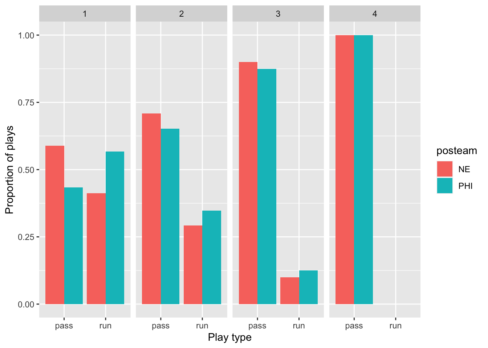
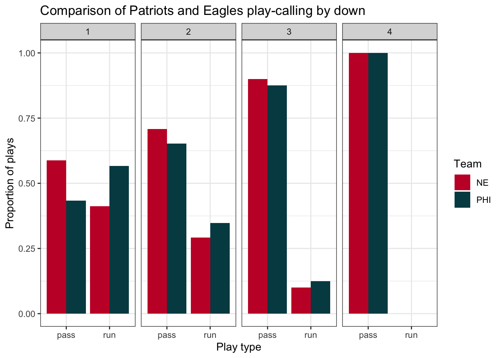
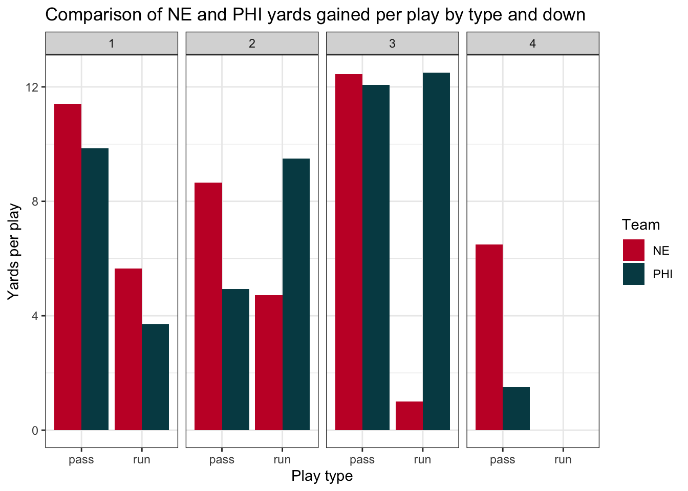
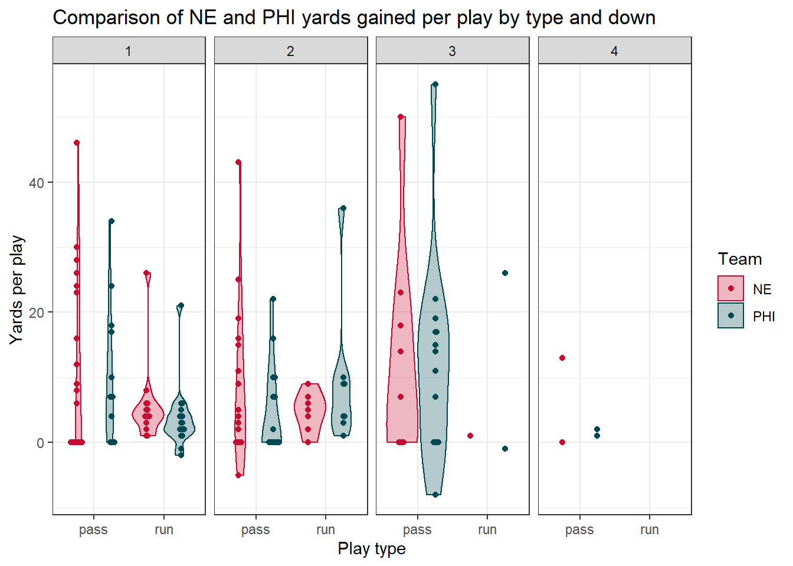
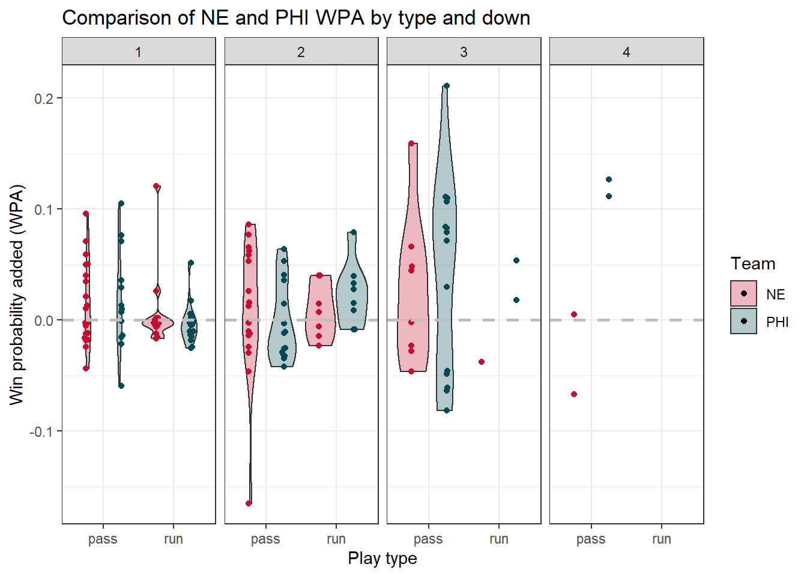
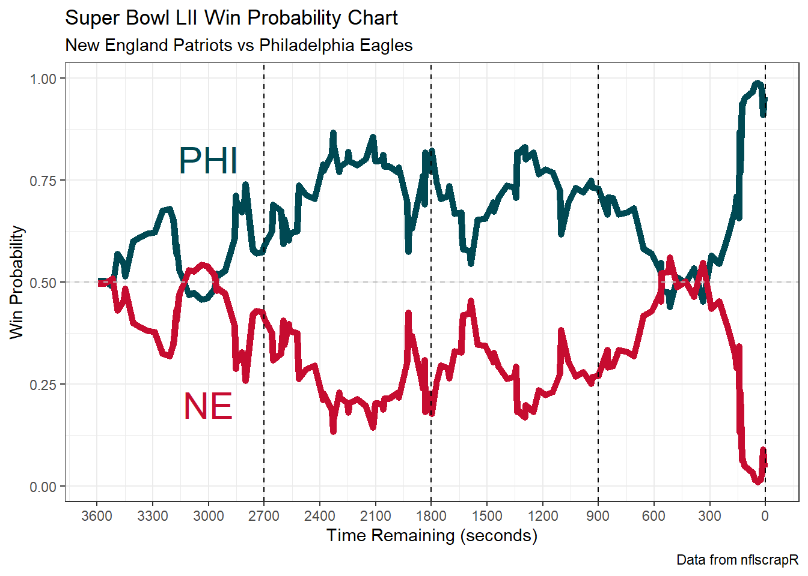

In this example analysis, we’re going to examine Super Bowl LII to gain insight into how the Philadelphia Eagles beat the New England Patriots (last year’s Super Bowl was pretty boring…)
The first step is to load the data. Although we can use the nflscrapR package to do this, we’re going to save time and access the repository of files that are already available to load and analyze from here. We’re going to read in the entire set of play-by-play data from the post-season for the 2017-2018 NFL season.
> post_pbp_2017 <- read_csv("https://raw.githubusercontent.com/ryurko/nflscrapR-data/master/play_by_play_data/post_season/post_pbp_2017.csv")
Parsed with column specification:
cols(
.default = col_double(),
home_team = col_character(),
away_team = col_character(),
posteam = col_character(),
posteam_type = col_character(),
defteam = col_character(),
side_of_field = col_character(),
game_date = col_date(format = ""),
game_half = col_character(),
time = col_time(format = ""),
yrdln = col_character(),
desc = col_character(),
play_type = col_character(),
pass_length = col_character(),
pass_location = col_character(),
run_location = col_character(),
run_gap = col_character(),
field_goal_result = col_character(),
extra_point_result = col_character(),
two_point_conv_result = col_character(),
timeout_team = col_character()
# ... with 88 more columns
)
See spec(...) for full column specifications.
Warning: 6 parsing failures.
row col expected actual file
1226 lateral_rusher_player_id 1/0/T/F/TRUE/FALSE 00-0030496 'https://raw.githubusercontent.com/ryurko/nflscrapR-data/master/play_by_play_data/post_season/post_pbp_2017.csv'
1226 lateral_rusher_player_name 1/0/T/F/TRUE/FALSE L.Bell 'https://raw.githubusercontent.com/ryurko/nflscrapR-data/master/play_by_play_data/post_season/post_pbp_2017.csv'
1862 lateral_interception_player_id 1/0/T/F/TRUE/FALSE 00-0027762 'https://raw.githubusercontent.com/ryurko/nflscrapR-data/master/play_by_play_data/post_season/post_pbp_2017.csv'
1862 lateral_interception_player_name 1/0/T/F/TRUE/FALSE R.Jones 'https://raw.githubusercontent.com/ryurko/nflscrapR-data/master/play_by_play_data/post_season/post_pbp_2017.csv'
2109 lateral_kickoff_returner_player_id 1/0/T/F/TRUE/FALSE 00-0030288 'https://raw.githubusercontent.com/ryurko/nflscrapR-data/master/play_by_play_data/post_season/post_pbp_2017.csv'
.... .................................. .................. .......... ................................................................................................................
See problems(...) for more details.This has loaded the entire play-by-play from the 2017 post-season (including the Pro Bowl!). We’re going to filter this data down to the Super Bowl only, which has the game_id of 2018020400 And to make this simpler, we’re going to select only a subset of the columns to work with
> super_bowl_pbp <- post_pbp_2017 %>%
+ # Only grab the Super Bowl
+ filter(game_id == 2018020400) %>%
+ # First grab context about the play:
+ select(posteam, defteam, drive, qtr, down, ydstogo, yardline_100,
+ half_seconds_remaining, score_differential,
+ # Next data on the result:
+ desc, play_type, yards_gained, sp,
+ # Finally the advanced metrics:
+ ep, wp, epa, wpa)Now using this dataset, we can proceed to compare the performance and decision making of the Eagles and the Patriots. First what plays did they call?
> super_bowl_pbp %>%
+ filter(play_type %in% c("pass", "run")) %>%
+ group_by(posteam, down, play_type) %>%
+ count()
# A tibble: 15 x 4
# Groups: posteam, down, play_type [15]
posteam down play_type n
<chr> <dbl> <chr> <int>
1 NE 1 pass 20
2 NE 1 run 14
3 NE 2 pass 17
4 NE 2 run 7
5 NE 3 pass 9
6 NE 3 run 1
7 NE 4 pass 2
8 PHI 1 pass 13
9 PHI 1 run 17
10 PHI 2 pass 15
11 PHI 2 run 8
12 PHI 3 pass 14
13 PHI 3 run 2
14 PHI 4 pass 2
15 PHI NA pass 2We can directly plot the proportions for each team as side-by-side barcharts
> super_bowl_pbp %>%
+ filter(play_type %in% c("pass", "run")) %>%
+ group_by(posteam, down, play_type) %>%
+ count() %>%
+ # Now let's remove that NA from the two point conversion:
+ filter(!is.na(down)) %>%
+ # Looking at counts really isn't appropriate, let's compare the proportions:
+ group_by(posteam, down) %>%
+ mutate(n_plays = sum(n),
+ prop_plays = n / n_plays) %>%
+ # Now actually create the chart!
+ ggplot(aes(x = play_type, y = prop_plays, fill = posteam)) +
+ geom_bar(stat = "identity", position = "dodge") +
+ facet_wrap(~down, ncol = 4) +
+ labs(x = "Play type", y = "Proportion of plays")
To make this better, we can use the actual team colors based on a dataset from the nflscrapR package. For the Patriots we’ll use their secondary color #c60c30 and we’ll use the Eagles primary color of #004953.
> ne_color <- "#c60c30"
> phi_color <- "#004953"
>
> super_bowl_pbp %>%
+ filter(play_type %in% c("pass", "run")) %>%
+ group_by(posteam, down, play_type) %>%
+ count() %>%
+ filter(!is.na(down)) %>%
+ group_by(posteam, down) %>%
+ mutate(n_plays = sum(n),
+ prop_plays = n / n_plays) %>%
+ ggplot(aes(x = play_type, y = prop_plays, fill = posteam)) +
+ geom_bar(stat = "identity", position = "dodge") +
+ facet_wrap(~down, ncol = 4) +
+ scale_fill_manual(values = c(ne_color, phi_color)) +
+ labs(x = "Play type", y = "Proportion of plays",
+ fill = "Team",
+ title = "Comparison of Patriots and Eagles play-calling by down") +
+ theme_bw()
Let’s take a look at the performance of these plays by yards-gained:
> super_bowl_pbp %>%
+ filter(play_type %in% c("pass", "run")) %>%
+ group_by(posteam, down, play_type) %>%
+ filter(!is.na(down)) %>%
+ # Now use the summarise function, generate the average yards gained:
+ summarize(yards_per_play = mean(yards_gained)) %>%
+ ggplot(aes(x = play_type, y = yards_per_play, fill = posteam)) +
+ geom_bar(stat = "identity", position = "dodge") +
+ facet_wrap(~down, ncol = 4) +
+ scale_fill_manual(values = c(ne_color, phi_color)) +
+ labs(x = "Play type", y = "Yards per play",
+ fill = "Team",
+ title = "Comparison of NE and PHI yards gained per play by type and down") +
+ theme_bw()
`summarise()` regrouping output by 'posteam', 'down' (override with `.groups` argument)
One number summaries toss out alot of information! Let’s view the entire distribution instead. One of the best ways to do this is with a beeswarm plot - which displays the actual individual points rather than smoothed summaries. We’ll display these points on top of violin plots which provide us with the general shape of the distributions
> # Install ggbeeswarm
> # install.packages("ggbeeswarm")
> library(ggbeeswarm)
> super_bowl_pbp %>%
+ filter(play_type %in% c("pass", "run")) %>%
+ filter(!is.na(down)) %>%
+ ggplot(aes(x = play_type, y = yards_gained, fill = posteam, color = posteam)) +
+ geom_violin(alpha = 0.3) +
+ # Display the individual points on top of the violin plots:
+ geom_beeswarm(dodge.width = 1) +
+ facet_wrap(~down, ncol = 4) +
+ scale_fill_manual(values = c(ne_color, phi_color)) +
+ scale_color_manual(values = c(ne_color, phi_color)) +
+ labs(x = "Play type", y = "Yards per play",
+ fill = "Team", color = "Team",
+ title = "Comparison of NE and PHI yards gained per play by type and down") +
+ theme_bw()
Warning in max(data$density): no non-missing arguments to max; returning -Inf
Warning: Computation failed in `stat_ydensity()`:
replacement has 1 row, data has 0
All yards are not created equal! We should really be looking at the impact in terms of win probability added (WPA) instead to get a better understanding of what impacted the game.
> super_bowl_pbp %>%
+ filter(play_type %in% c("pass", "run")) %>%
+ filter(!is.na(down)) %>%
+ ggplot(aes(x = play_type, y = wpa, fill = posteam)) +
+ geom_violin(alpha = 0.3) +
+ geom_beeswarm(aes(color = posteam), dodge.width = 1) +
+ geom_hline(yintercept = 0, linetype = "dashed", color = "gray",
+ size = 1) +
+ facet_wrap(~down, ncol = 4) +
+ scale_fill_manual(values = c(ne_color, phi_color)) +
+ scale_color_manual(values = c(ne_color, phi_color), guide = FALSE) +
+ labs(x = "Play type", y = "Win probability added (WPA)",
+ fill = "Team",
+ title = "Comparison of NE and PHI WPA by type and down") +
+ theme_bw()
Warning: Removed 1 rows containing non-finite values (stat_ydensity).
Warning in max(data$density): no non-missing arguments to max; returning -Inf
Warning: Computation failed in `stat_ydensity()`:
replacement has 1 row, data has 0
Warning: Removed 1 rows containing missing values (position_beeswarm).
Now we see a big difference between the Eagles and Patriots, especially on those fourth down passing attempts… which plays are those?
> super_bowl_pbp %>%
+ group_by(posteam) %>%
+ filter(posteam == "PHI",
+ play_type == "pass",
+ !is.na(down)) %>%
+ arrange(desc(wpa)) %>%
+ select(desc, wpa, down, qtr) %>%
+ slice(1:3)
Adding missing grouping variables: `posteam`
# A tibble: 3 x 5
# Groups: posteam [1]
posteam desc wpa down qtr
<chr> <chr> <dbl> <dbl> <dbl>
1 PHI (2:25) (Shotgun) N.Foles pass short left to Z.Ertz for 11 yards, TOUCHDOWN. The Replay Official reviewed the pas… 0.211 3 4
2 PHI (:38) (Shotgun) T.Burton pass short right to N.Foles for 1 yard, TOUCHDOWN. PHI 9-N.Foles first career Reception. 0.127 4 2
3 PHI (5:39) (Shotgun) N.Foles pass short left to Z.Ertz to PHI 47 for 2 yards (D.Harmon) [T.Flowers]. 0.111 4 4The number one play was the go-ahead TD pass which gave the Eagles the lead in the 4th quarter, while the second highest play was the famous Philly Special!
Finally, we can wrap up this analysis with a win probability chart that shows the overall story of the game.
> # Let's put this all together to display a win probability chart:
> post_pbp_2017 %>%
+ # Only grab the Super Bowl
+ filter(game_id == 2018020400) %>%
+ filter(!is.na(home_wp),
+ !is.na(away_wp),
+ timeout == 0) %>%
+ select(game_seconds_remaining,
+ home_wp,
+ away_wp) %>%
+ # Rather than having separate columns for each team's win probability,
+ # we can gather them into one column:
+ gather(team, wpa, -game_seconds_remaining) %>%
+ ggplot(aes(x = game_seconds_remaining, y = wpa, color = team)) +
+ geom_line(size = 2) +
+ geom_hline(yintercept = 0.5, color = "gray", linetype = "dashed") +
+ scale_color_manual(labels = c("PHI", "NE"),
+ values = c(phi_color, ne_color),
+ guide = FALSE) +
+ scale_x_reverse(breaks = seq(0, 3600, 300)) +
+ annotate("text", x = 3000, y = .80, label = "PHI", color = phi_color, size = 8) +
+ annotate("text", x = 3000, y = .20, label = "NE", color = ne_color, size = 8) +
+ geom_vline(xintercept = 900, linetype = "dashed", color = "black") +
+ geom_vline(xintercept = 1800, linetype = "dashed", color = "black") +
+ geom_vline(xintercept = 2700, linetype = "dashed", color = "black") +
+ geom_vline(xintercept = 0, linetype = "dashed", color = "black") +
+ labs(
+ x = "Time Remaining (seconds)",
+ y = "Win Probability",
+ title = "Super Bowl LII Win Probability Chart",
+ subtitle = "New England Patriots vs Philadelphia Eagles",
+ caption = "Data from nflscrapR") +
+ theme_bw()
Congratulations, you now have what it takes to cover NFL games for the Athletic!